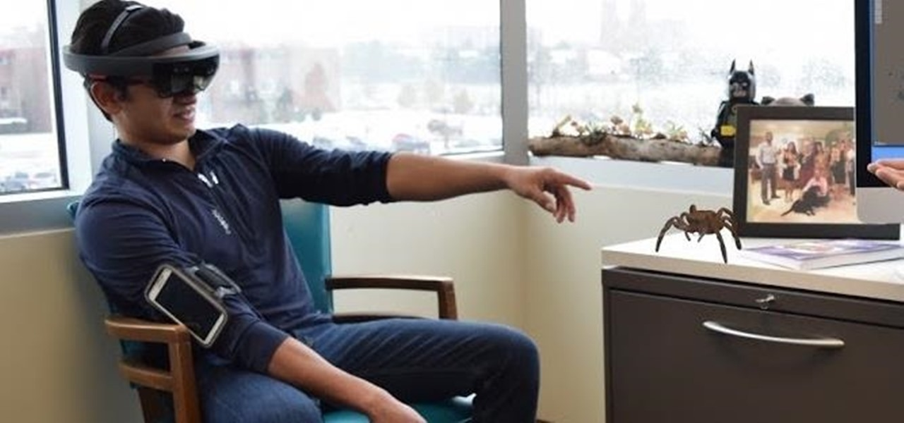
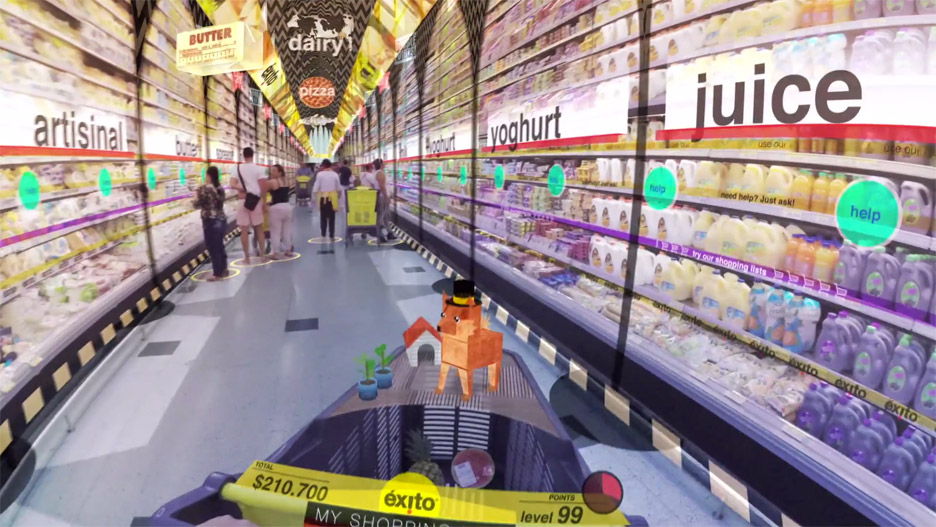
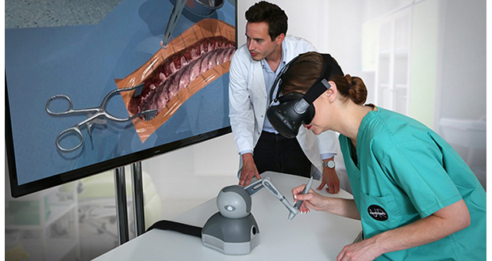

Overview
An idea I had for the project was to make an augmented reality simulation app that specifically targets helping the medical industry and mental health. This app will have a wide range of instances that help future doctors do medical training such as simulating surgery and people with phobias and anxiety. This app could also help criminals who have been in prison for an extended amount of time and as a result have lost a sense of reality outside of the prison. It can do this virtually transporting them to (for example) a grocery store, and allow them to relearn shopping and interact with the cashier.
Motivation
Virtual reality and augmented reality is a very niche technology that has been mainly gaming focused. Although virtual reality is still a rapidly growing sector, I feel that it is still being underutilized by the general population with only 11% of adults in the US owning some sort of VR hardware according to a study by YouGov (Source). Although only it is only 11%, it is still up from 7% in 2017. As more and more people buy virtual reality products, the readily downloadable simulation that can help people with phobias and anxiety will be a large benefit.
Description
This project’s main a role is to store many simulations of augmented reality that help a wide array of people. The general interface in mind was upon opening the app the user would be greeted with multiple tiles, these tiles will be students, phobias, mental health and more. Opening each tile will grant more simulations in that group. For example, if you were to open the phobia it would show multiple phobias such as claustrophobia, arachnophobia etc. Further opening a tile will allow you open simulations such spiders, a small room etc. Some examples of groups of people that it can help are:
People with phobias
The most successful way to treat a phobia is to use exposure therapy. As the name would suggest, this means to expose the target patient to the source of anxiety without the intention to cause harm. Augmented reality can be used to simulate the source of the patients fears. For example, if the patient were to have arachnophobia, the patient could be given an augmented reality headset to see a simulated spider move around. During this time the patient will be able to slowly work towards getting comfortable around spiders at their own pace. Another example would be aerophobia, augmented reality can simulate them being in the plane. It should be noted that since the patient will be using augmented reality headsets, they can easily take off their headset if they are feeling extremely unwell. This is a large benefit as it would be terrible if a patient with aerophobia were to be thrown in the deep end by putting them on a real plane.

Prisoners
Criminals who have been locked up for an extended amount of time (20+) years will inevitably lose the ability to function in society. The world is a lot different from 20 years ago and the difference only gets bigger the further back we go. To get these convicts ready for life out of prison, we could possibly have them experience the outside world through a virtual reality headset to get used to the feeling of society. Furthermore, the inmates can be transported virtually to a simulation of a grocery store. This can allow them to practice interactions with the cashier or teach them to use the self-checkout machine. Doing this could also be a source of hope for the inmate, giving them further reason to rehabilitate.

Medical Students
Medical students can make great use of this technology by being able to constantly practice things such as surgery on virtually simulated bodies, as a result this would eliminate the need to use cadavers. This simulation will work similarly to the game “surgery simulator”, in the game a body is simulated, and the aim is to perform on the virtual body. In a study by the Western Orthopaedic Association, medical students who trained with virtual reality completed surgery 20% faster and followed 38% steps more correctly than those how did not use it (Source). With this technology we will be able to have a generation of more efficient people in the industry.

Tools and Technology
In terms of tools and technology, the main pieces of hardware that will be needed is a virtual reality/ augmented reality headset and a decent computer to be able to render the 3D models efficiently. For the software, 3D modelling programs such as Autodesk 3ds max, blender and cinema 4D will be required to maximise the detail of the models. Other editing tools such as photo shop can be used to edit some photos and such. Developers and programmers should also be able to use applications such as WebVR and Unity/Unreal.
Skills required
To be able to develop an app like this a large variety of skills would be needed such as:
• Knowledge in C# and JavaScript to be able to use UnityScript and WebVr and write efficient code
• UI/UX experience to produce an interface that is convenient and appealing for the end user
• 3D Modelling skills to produce realistic and accurate models of things such as human body and spiders
• Experts in many areas such as psychology, surgeons and entomologists would also be needed to oversee the virtual reality simulations to give feedback on what can be changed or done to make the most reliable and realistic end product as possible
Outcome
If this project were to be a success, many people such as students, prison inmates and people with phobias/anxiety will be able to benefit from it. When virtual reality becomes more affordable and more easily accessible by the general population, everyone will have a quick and easy downloadable app that will help them with psychological issues and education. With depression and mental health being a growing problem, many people can seek out virtual reality to give them a sense of relief by virtually transporting them to pleasant scenarios such as a calm relaxing beach with ambient music playing.